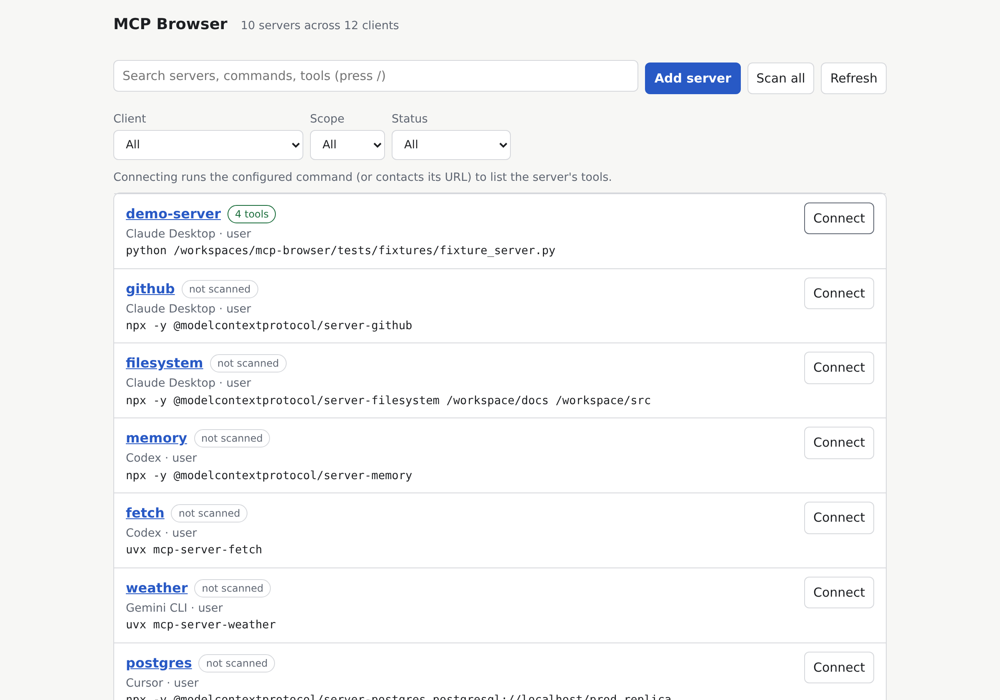
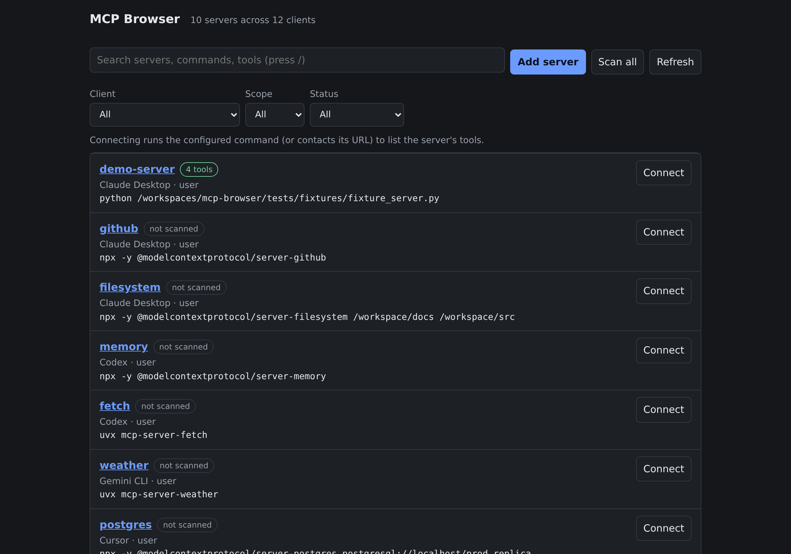
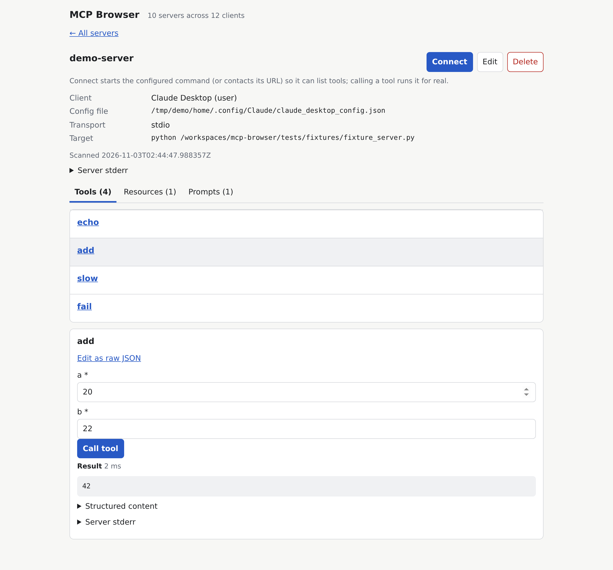
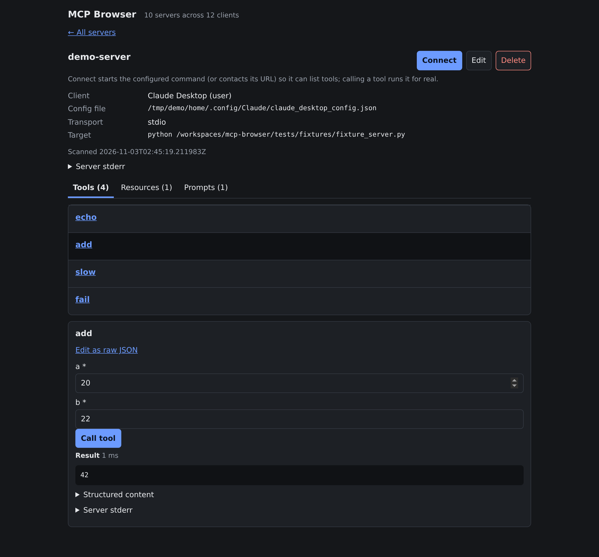
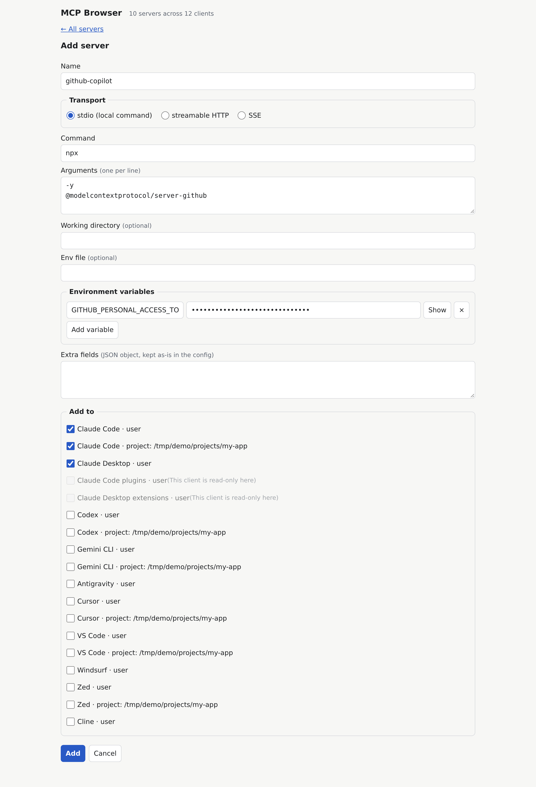

Universal Discovery
Scans and consolidates MCP server configurations across 10+ AI tools and current repository checkouts into a single cohesive overview.
A private local web interface that discovers servers from Claude Code, Cursor, VS Code, Windsurf, Zed, and Gemini CLI. Safely execute tools via generated forms and update configs atomically with automatic backups.
$uv tool install mcp-browser && mcp-browser

Scans and consolidates MCP server configurations across 10+ AI tools and current repository checkouts into a single cohesive overview.
Connects to stdio and SSE servers, inspects capabilities, builds schema-validated HTML input forms, and tests tools directly in the browser.
Updates real editor JSON/TOML files safely. Automatically creates timestamped backups (retaining the 20 most recent revisions) before touching files.
Binds exclusively to loopback (127.0.0.1), protects tokens in URL hash fragments, defends against DNS rebinding, and blocks telemetry.
Overview of all discovered MCP servers, transport types, and health states.

Sleek dark theme dashboard with real-time status and filter chips.

Interactive JSON Schema generated form executing tools in real time.

Dark theme tool tester displaying formatted execution responses.

Add or edit servers across multiple clients simultaneously with atomic safety.
Python 3.11+ is required for uv and pip. Prebuilt binaries need no Python runtime.
Isolates the CLI into an independent tool environment:
uv tool install mcp-browser && mcp-browserInstalls directly into your current Python environment:
pip install mcp-browser && mcp-browserRun without PyPI using uv tool:
uv tool install "git+https://github.com/raisen/mcp-browser#subdirectory=packages/cli"Or clone the repository to run from source:
git clone https://github.com/raisen/mcp-browser && cd mcp-browser && uv sync --all-packages && uv run mcp-browserFully self-contained executables packaged with PyInstaller. Zero runtime dependencies or Python installation required.
For Macs with M1, M2, M3, M4 processors (macOS 12+).
For Macs with 64-bit Intel processors (macOS 12+).
For Windows 10 and 11 64-bit editions.
Compatible with standard glibc 2.31+ distributions.
Verify archive integrity with SHA256SUMS.txt:
shasum -a 256 -c SHA256SUMS.txt --ignore-missingPrebuilt binaries are not Apple-signed or Microsoft-notarized:
xattr -dr com.apple.quarantine mcp-browser after unzipping.Unblock-File -Path .\mcp-browser\mcp-browser.exe in PowerShell.MCP Browser automatically resolves user-level and project-level configuration files across your operating system:
| Client | User Configuration Path | Project Configuration | Transports |
|---|---|---|---|
| Claude Code | ~/.claude.json |
.mcp.json |
stdioSSE |
| Claude Desktop | claude_desktop_config.json |
— | stdio |
| Cursor | ~/.cursor/mcp.json |
.cursor/mcp.json |
stdioSSE |
| VS Code | Code/User/mcp.json |
.vscode/mcp.json |
stdioSSE |
| Windsurf | ~/.codeium/windsurf/mcp_config.json |
— | stdioSSE |
| Zed | ~/.config/zed/settings.json |
.zed/settings.json |
stdioSSE |
| Codex | ~/.codex/config.toml |
.codex/config.toml |
stdio |
| Gemini CLI | ~/.gemini/settings.json |
.gemini/settings.json |
stdioSSE |
| Antigravity | mcp_config.json |
— | stdioSSE |
| Cline | cline_mcp_settings.json |
— | stdioSSE |
| Plugins & Extensions | Claude Code Plugins & Desktop Extensions | — | read-only |
Because MCP servers execute terminal commands with your local user privileges, MCP Browser enforces defense-in-depth:
The server binds strictly to 127.0.0.1. Incoming requests are rejected if their Host or Origin header is not recognized, defending against DNS rebinding and cross-site attacks.
The random bearer token is passed via #token=.... Because browsers never transmit URL fragments over HTTP, the token never appears in server access logs or external referrer headers.
Project-level configurations checked out from git can contain malicious commands. MCP Browser blocks execution on project servers until you explicitly inspect the command and confirm consent.
Environment keys and authorization tokens are masked (•••) in the UI. Before modifying any configuration file, a timestamped copy is saved to backups/ (last 20 kept).
| Command | Description |
|---|---|
mcp-browser or mcp-browser serve |
Runs foreground server, displays URL with token, and opens default browser. |
mcp-browser start |
Spawns server in background daemon mode (logs to server.log in state folder). |
mcp-browser stop |
Gracefully terminates the background server process after PID verification. |
mcp-browser status |
Reports running/stopped state (exit code 0 if running, 1 if stopped). |
mcp-browser open |
Opens the web browser to the URL of the active running server instance. |
Available flags: --port <PORT> (default 8765) and --no-open (suppresses automatic browser launch).